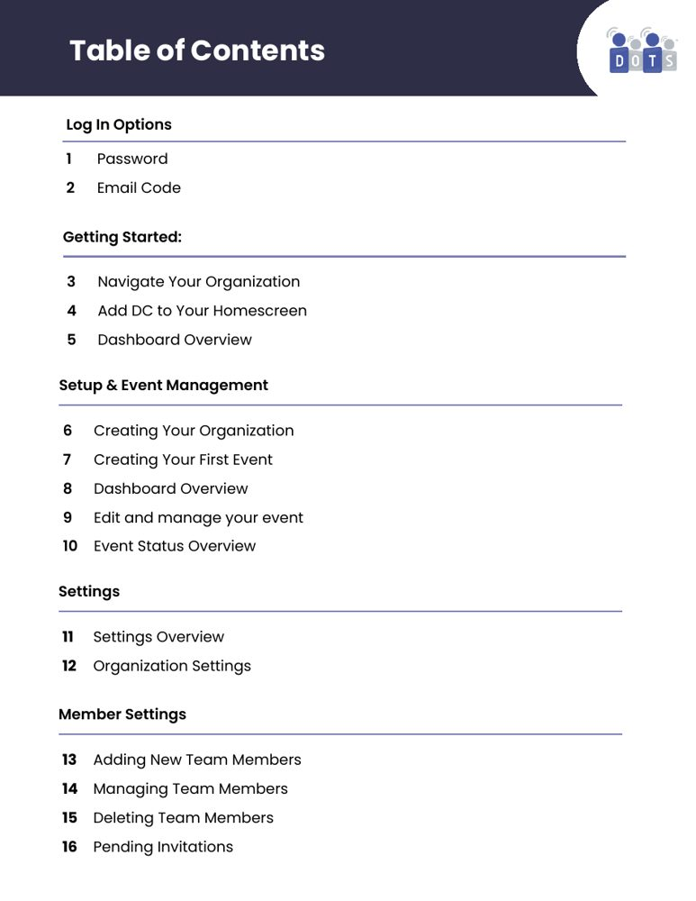
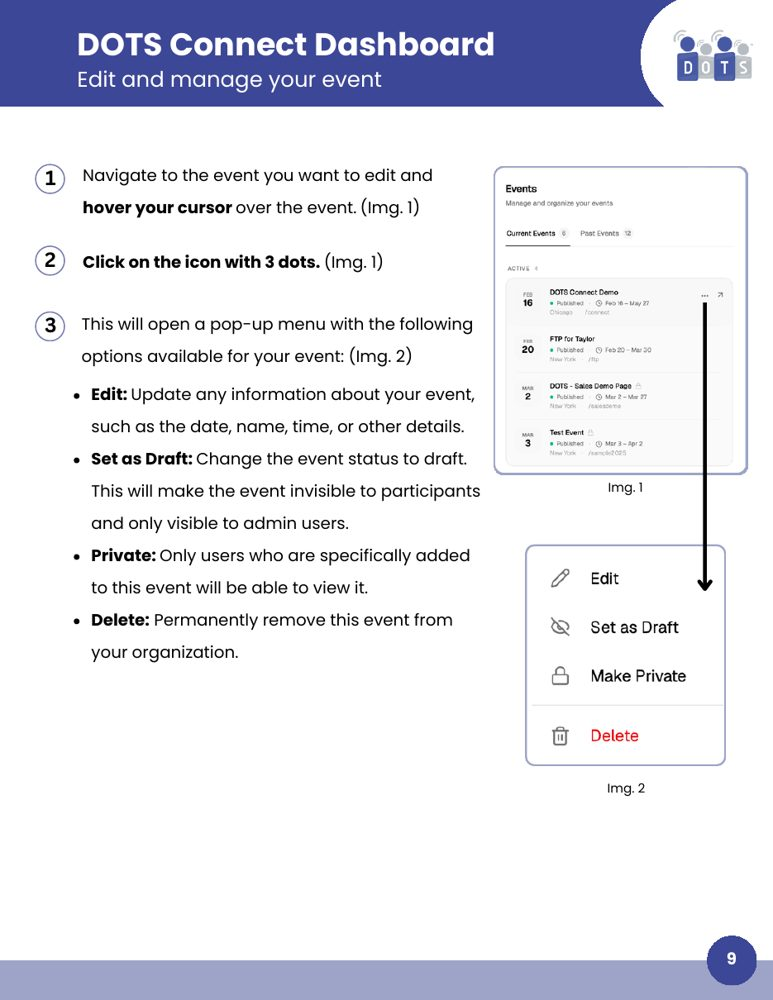
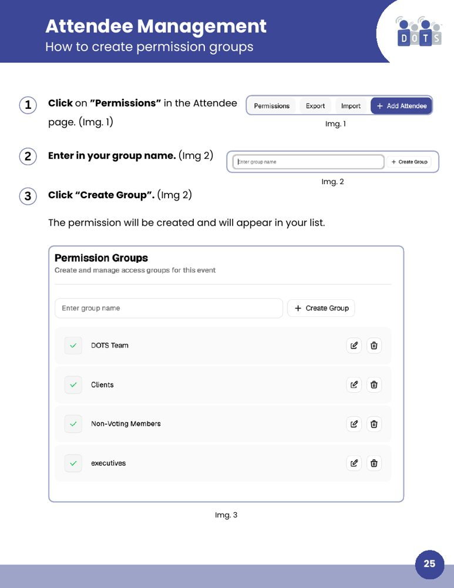
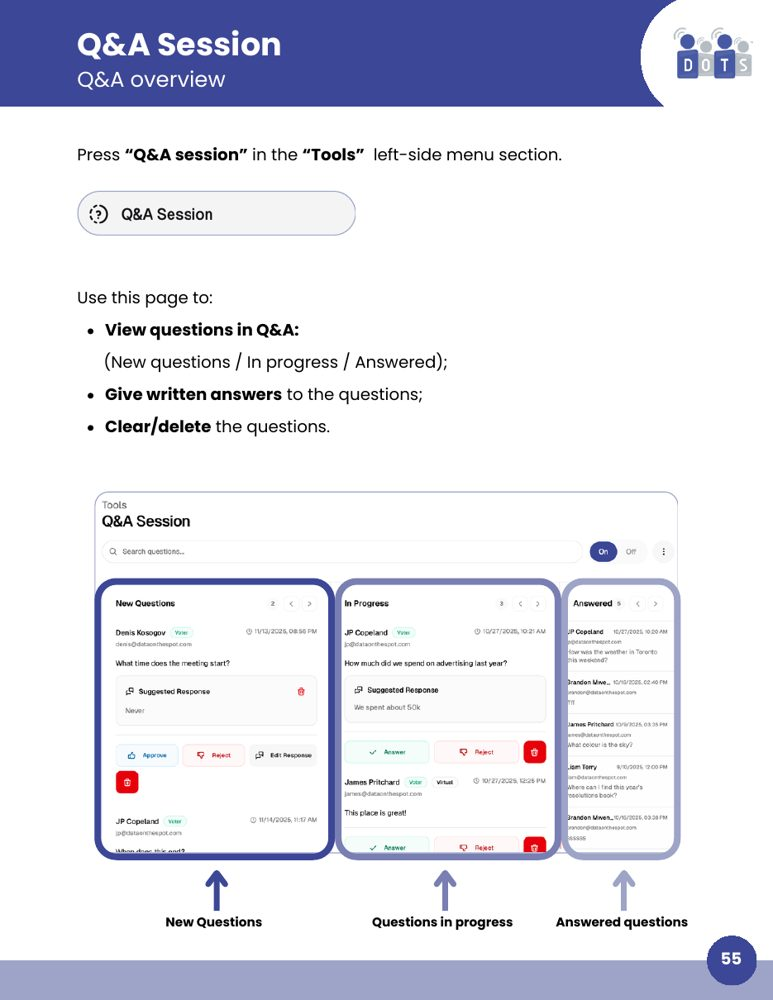
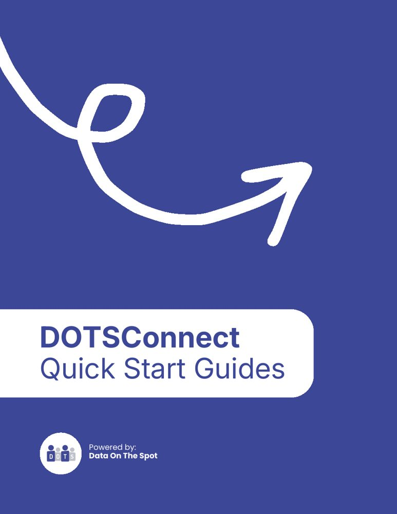
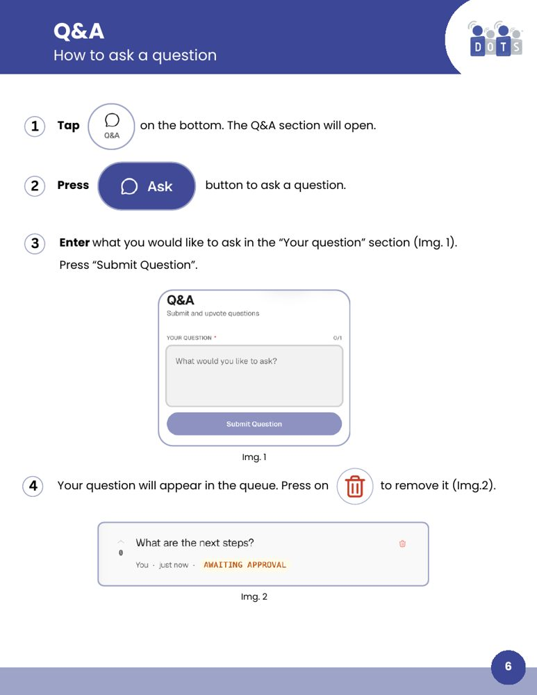
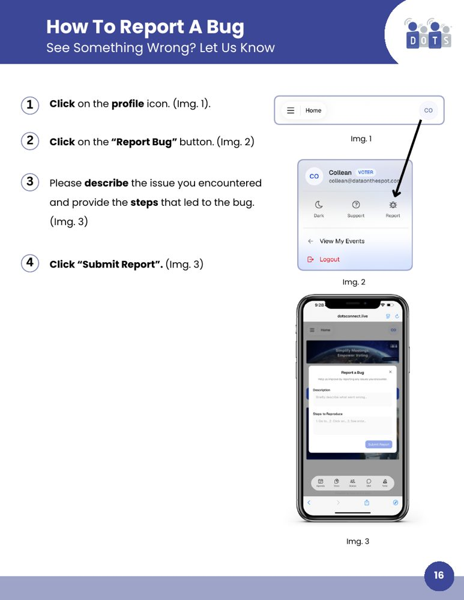
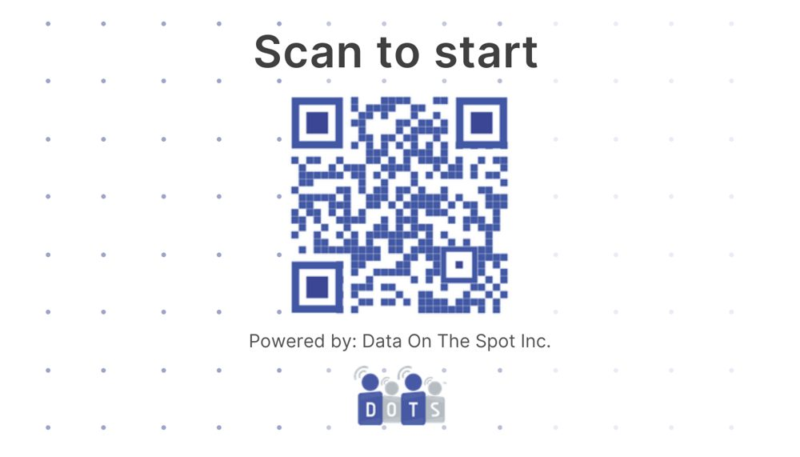
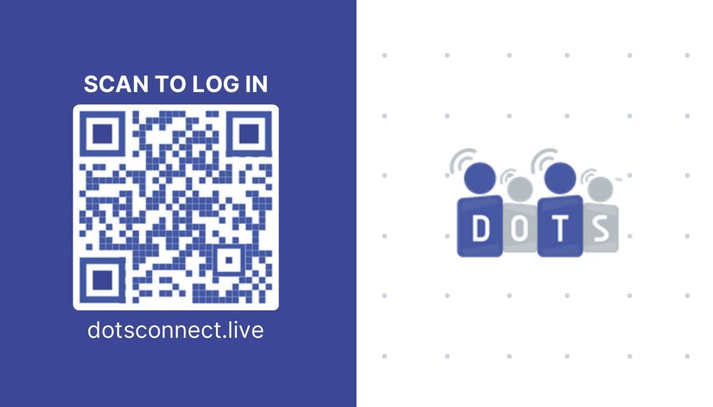

#guidebooks
Guide books for the voting software
Step-by-step help for people who aren’t technical.
The challenge
Many people who use Data on the Spot’s voting software aren’t technical, and many are older. They needed a way to learn it without waiting for someone to walk them through it.
What I did
- Wrote and designed step-by-step guide books that explain each task in plain language, including the Admin Guides, the Quick Start Guides and a start-up card.
- Delivered product demos and client training sessions alongside the guides.
- Gave advice on website design for the app.
- Kept everything consistent with the brand kit.
The Admin Guides
One guide for the people who set up and run events. Every task has numbered steps, a short plain-language instruction and a screenshot with arrows pointing to what to click.





The Quick Start Guides
A shorter set for the same software, covering the tasks people need first.



The start-up card
A small card with a QR code, so attendees can log in without typing a link.


The result
New users have a guide they can follow on their own, which supports onboarding and self-service.
Some Data on the Spot work is confidential, so this page shows only what is public or cleared.